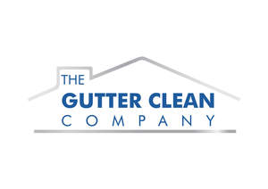

Trade Mark Journal No.2025/010 7 March 2025
UK00004163703 21 February 2025 (35,37)

- Class 35
- Advertising; business management; business administration; office functions; administration of the business affairs of franchises; advice in the running of establishments as franchises; advisory services for business relating to the establishment of franchises; advisory services for business relating to the operation of franchises; advisory services relating to publicity for franchisees; advisory services relating to the operation of franchises; business advertising services relating to franchising; business advice and consultancy relating to franchising; business advisory services relating to franchising; business advisory services relating to the establishment and operation of franchises; business assistance relating to franchising; business assistance relating to starting and running a franchise; business assistance relating to the establishment of franchises; business management advisory services relating to franchising; business management assistance in the field of franchising; dissemination of advertising and promotional materials; dissemination of advertising materials; distribution of advertising materials; franchising services providing business assistance; franchising services providing marketing assistance; management advisory services related to franchising; providing assistance in the field of product commercialisation within the framework of a franchise contract; providing assistance in the management of franchised businesses; provision of business advice relating to franchising; provision of business information relating to franchising; administration of the business affairs of franchises for the cleaning industry; advertising for the cleaning industry; advice in the running of establishments as franchises for the cleaning industry; advisory services for businesses relating to the establishment of franchises for the cleaning industry; advisory services for businesses relating to the operation of franchises for the cleaning industry; advisory services relating to publicity for franchisees of the cleaning industry; advisory services relating to the operation of franchises for the cleaning industry; business administration for the cleaning industry; business advertising services relating to franchising for the cleaning industry; business advice and consultancy relating to franchising for the cleaning industry; business advisory services relating to franchising for the cleaning industry; business advisory services relating to the establishment and operation of franchises for the cleaning industry; business assistance relating to franchising for the cleaning industry; business assistance relating to starting and running a franchise in the cleaning industry; business assistance relating to the establishment of franchises for the cleaning industry; business management advisory services relating to franchising for the cleaning industry; business management assistance in the field of franchising for the cleaning industry; business management for the cleaning industry; dissemination of advertising and promotional materials for the cleaning industry; dissemination of advertising materials for the cleaning industry; distribution of advertising materials for the cleaning industry; franchising services providing business assistance for the cleaning industry; franchising services providing marketing assistance for the cleaning industry; management advisory services related to franchising for the cleaning industry; providing assistance in the field of product commercialisation within the framework of a franchise contract for the cleaning industry; providing assistance in the management of franchised businesses in the cleaning industry; provision of business advice relating to franchising for the cleaning industry; provision of business information relating to franchising for the cleaning industry; business assistance relating to starting and running a franchise of cleaning; dissemination of advertising and promotional materials in the field of cleaning activities; franchising services providing business assistance for cleaning activities; franchising services providing marketing assistance for cleaning activities; management advisory services related to franchising of cleaning activities; providing assistance in the field of product commercialization within the framework of a franchise contract for cleaning activities; provision of business information relating to franchising of cleaning activities; information, advisory and consultancy services relating to the aforesaid.
- Class 37
- Cleaning of building exterior surfaces; Interior and exterior cleaning of buildings; Facade cleaning; Cleaning of building interiors; Building cleaning; Cleaning of external surfaces of buildings; Cleaning of windows; Cleaning of wall surfaces; Cleaning of building facades; Cleaning of uPVC fascia; Cleaning of soffits; Cleaning of cladding; Cleaning of floor surfaces; Cleaning services; Clearing and cleaning gutters; cleaning and clearing of conservatory roofs; Window cleaning; Cleaning services; Cleaning of windows; Domestic cleaning services; Cleaning of offices; Cleaning of shops; Industrial cleaning services; Cleaning of property; Ceiling cleaning services; Cleaning of buildings; Cleaning of drains; Office cleaning services; Cleaning of schools; Clearing and cleaning gutters; Roofing services; Building cleaning; Pressure washing services; Cleaning of roofs; moss removal on roofs; biocide treatment of roofs..
The Gutter Clean Company Franchise Ltd